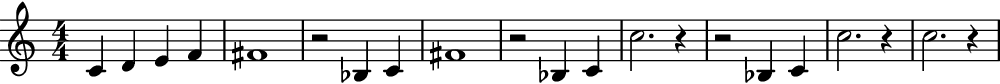

auxjad.LoopByList¶
-
class
auxjad.LoopByList(container: list, *, window_size: int, step_size: int = 1, max_steps: int = 1, repetition_chance: float = 0.0, forward_bias: float = 1.0, head_position: int = 0, move_window_on_first_call: bool = False)¶ Similar to
LoopByList, but instead of taking anabjad.Containerinput, it takes a list of arbitrary size. It then outputs the list elements, whatever they may be. The list elements can beabjad.Container’s, but they can also be anything else, thus being more general. Takes a list as input as well as an integer representing the number of elements per looping window, then outputs individual elements with according to the looping process. For instance, if the initial list had the elements[A, B, C, D, E, F]and the looping window was size three, the output would be:A B C B C D C D E D E F E F FThis can be better visualised as:
A B C B C D C D E D E F E F FIt takes a list and the number of elements of the window as arguments. Each call of the object, in this case
looper(), will move the window forwards and output the result:>>> input_list = ['A', 'B', 'C', 'D', 'E', 'F'] >>> looper = auxjad.LoopByList(input_list, window_size=3) >>> looper() ['A', 'B', 'C'] >>> looper() ['B', 'C', 'D']
The property
current_windowcan be used to access the current window without moving the head forwards.>>> looper.current_window ['B', 'C', 'D']
The very first call will output the input list without processing it. To disable this behaviour and have the looping window move on the very first call, initialise the class with the keyword argument
move_window_on_first_callset toTrue.>>> input_list = ['A', 'B', 'C', 'D', 'E', 'F'] >>> looper = auxjad.LoopByList(input_list, ... window_size=3, ... move_window_on_first_call=True, ... ) >>> looper() ['B', 'C', 'D']
The instances of
LoopByListcan also be used as an iterator, which can then be used in a for loop to exhaust all windows.>>> input_list = ['A', 'B', 'C', 'D', 'E', 'F'] >>> looper = auxjad.LoopByList(input_list, ... window_size=3, ... ) >>> for window in looper: ... print(window) ['A', 'B', 'C'] ['B', 'C', 'D'] ['C', 'D', 'E'] ['D', 'E', 'F'] ['E', 'F'] ['F']
This class can take many optional keyword arguments during its creation.
step_sizedictates the size of each individual step in number of elements (default value is 1).max_stepssets the maximum number of steps that the window can advance when the object is called, ranging between 1 and the input value (default is also 1).repetition_chancesets the chance of a window result repeating itself (that is, the window not moving forwards when called). It should range from 0.0 to 1.0 (default 0.0, i.e. no repetition).forward_biassets the chance of the window moving forward instead of backwards. It should range from 0.0 to 1.0 (default 1.0, which means the window can only move forwards. A value of 0.5 gives 50% chance of moving forwards while a value of 0.0 will move the window only backwards). Finally,head_positioncan be used to offset the starting position of the looping window (default is 0).>>> input_list = ['A', 'B', 'C', 'D', 'E', 'F'] >>> looper = auxjad.LoopByList(input_list, ... window_size=3, ... step_size=1, ... max_steps=2, ... repetition_chance=0.25, ... forward_bias=0.2, ... head_position=0, ... ) >>> looper.window_size 3 >>> looper.step_size 1 >>> looper.repetition_chance 0.25 >>> looper.forward_bias 0.2 >>> looper.max_steps 2 >>> looper.head_position 0
Use the properties below to change these values after initialisation.
>>> looper.window_size = 2 >>> looper.step_size = 2 >>> looper.max_steps = 3 >>> looper.repetition_chance = 0.1 >>> looper.forward_bias = 0.8 >>> looper.head_position = 2 >>> looper.window_size 2 >>> looper.step_size 2 >>> looper.max_steps 3 >>> looper.repetition_chance 0.1 >>> looper.forward_bias 0.8 >>> looper.head_position 2
The function
len()can be used to get the total number of elements in the container.>>> input_list = ['A', 'B', 'C', 'D', 'E', 'F'] >>> looper = auxjad.LoopByList(input_list, window_size=3) >>> len(looper) 6
To run through just part of the process and output it as a single list, starting from the initial head position, use the method
output_n()and pass the number of iterations as argument.>>> input_list = ['A', 'B', 'C', 'D'] >>> looper = auxjad.LoopByList(input_list, window_size=3) >>> looper.output_n(2) ['A', 'B', 'C', 'B', 'C', 'D']
To run through the whole process and output it as a single list, from the initial head position until the process outputs the single last element, use the method
output_all().>>> input_list = ['A', 'B', 'C', 'D'] >>> looper = auxjad.LoopByList(input_list, window_size=3) >>> looper.output_all() ['A', 'B', 'C', 'B', 'C', 'D', 'C', 'D', 'D']
To change the size of the looping window after instantiation, use the property
window_size. In the example below, the initial window is of size 3, and so the first call of the looper object outputs the first, second, and third elements of the list. The window size is then set to 4, and the looper is called again, moving to the element in the next position, thus outputting the second, third, fourth, and fifth elements.>>> input_list = ['A', 'B', 'C', 'D', 'E', 'F'] >>> looper = auxjad.LoopByList(input_list, window_size=3) >>> looper() ['A', 'B', 'C'] >>> looper.window_size = 4 >>> looper() ['B', 'C', 'D', 'E']
It should be clear that the list can contain any types of elements:
>>> input_list = [123, 'foo', (3, 4), 3.14] >>> looper = auxjad.LoopByList(input_list, window_size=3) >>> looper() [123, 'foo', (3, 4)]
This also include Abjad’s types. Abjad’s exclusive membership requirement is respected since each call returns a
copy.deepcopyof the window. The same is true to theoutput_all()method.>>> import abjad >>> import copy >>> input_list = [ ... abjad.Container(r"c'4 d'4 e'4 f'4"), ... abjad.Container(r"fs'1"), ... abjad.Container(r"r2 bf4 c'4"), ... abjad.Container(r"c''2. r4"), ... ] >>> looper = auxjad.LoopByList(input_list, window_size=3) >>> staff = abjad.Staff() >>> for element in looper.output_all(): ... staff.append(element) >>> abjad.f(staff) \new Staff { { c'4 d'4 e'4 f'4 } { fs'1 } { r2 bf4 c'4 } { fs'1 } { r2 bf4 c'4 } { c''2. r4 } { r2 bf4 c'4 } { c''2. r4 } { c''2. r4 } }
-
__init__(container: list, *, window_size: int, step_size: int = 1, max_steps: int = 1, repetition_chance: float = 0.0, forward_bias: float = 1.0, head_position: int = 0, move_window_on_first_call: bool = False)¶ Initialize self. See help(type(self)) for accurate signature.
Methods
__init__(container, *, window_size, …)Initialize self. output_all()Custom output_all() method since parent’s method outputs an abjad.Selection.output_n(n)Custom output_n() method since parent’s method outputs an abjad.Selection.Attributes
current_windowforward_biashead_positionmax_stepsrepetition_chancestep_sizewindow_size-